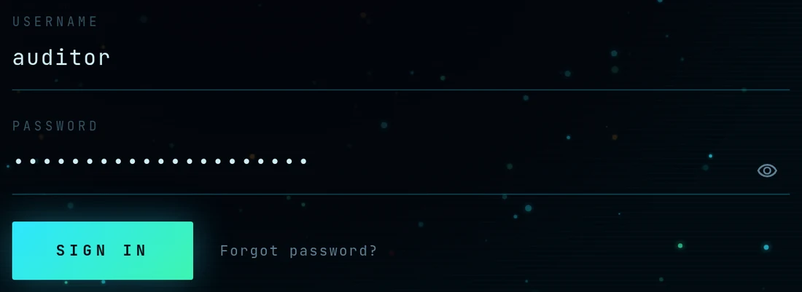
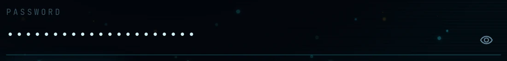
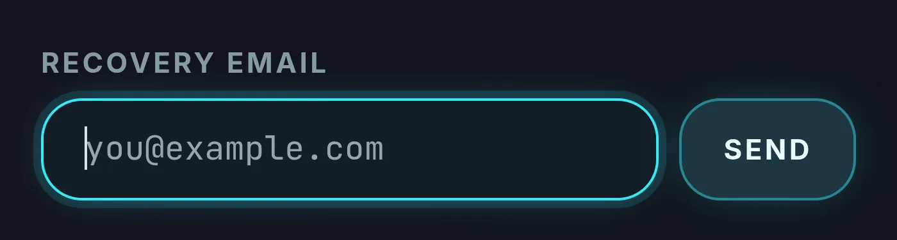
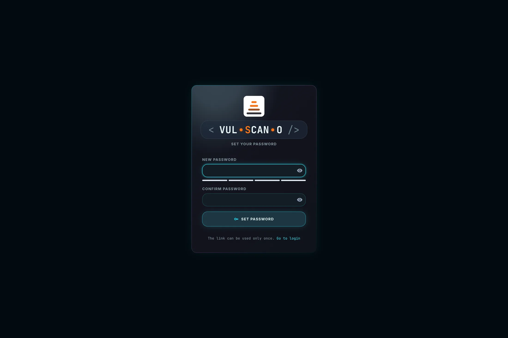
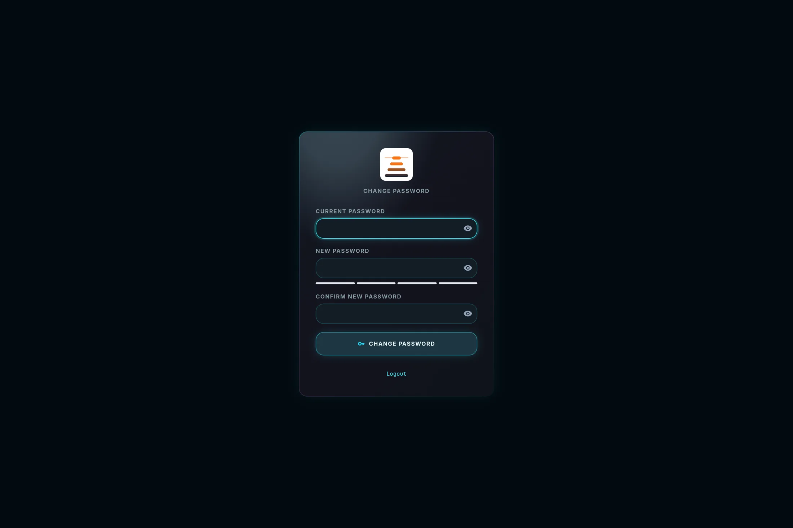

Sign in, activation and password changesAccesso, attivazione e cambio password
Three small pages carry the entire credential lifecycle: /login for signing in and recovering
access, /activate for one-time links, and /change-password for voluntary and forced
changes. They are deliberately plain — no data, no navigation, nothing to leak.
Tre pagine piccole reggono l'intero ciclo di vita delle credenziali: /login per accedere e
recuperare l'accesso, /activate per i link monouso e /change-password per i cambi
volontari e forzati. Sono volutamente spoglie: nessun dato, nessuna navigazione, nulla che possa trapelare.
Sign inAccesso /login unauthenticatednon autenticato
Page OverviewPanoramica
The entry point of the application. Every other page and every API call requires a valid session, so an unauthenticated request to any URL lands here. The page carries the product wordmark, the two credential fields, the submit button, the self-service recovery link and — in small type at the bottom — the running version string, which is useful when you support several installations.
Il punto di ingresso dell'applicazione. Ogni altra pagina e ogni chiamata API richiedono una sessione valida, quindi una richiesta non autenticata a qualsiasi URL finisce qui. La pagina mostra il wordmark del prodotto, i due campi credenziali, il pulsante di invio, il link di recupero self-service e — in piccolo, in fondo — la stringa di versione in esecuzione, utile quando gestisci più installazioni.
Features BreakdownDettaglio funzionalità
| ControlControllo | TypeTipo | BehaviourComportamento |
|---|---|---|
| USERNAME | text fieldcampo testo | The account name. Case-sensitive and unique across the installation. Autofocused on load, so you can start typing immediately. Il nome dell'account. Sensibile alle maiuscole e unico nell'installazione. Riceve il focus al caricamento, così puoi digitare subito. |
| PASSWORD | password fieldcampo password | Verified server-side against a PBKDF2-HMAC-SHA256 hash — 200 000 iterations with a random per-user salt. The plaintext exists only for the duration of the request and is never logged. Verificata lato server contro un hash PBKDF2-HMAC-SHA256 — 200 000 iterazioni con salt casuale per utente. Il testo in chiaro esiste solo per la durata della richiesta e non viene mai registrato nei log. |
| Show password (eye icon)Mostra password (icona occhio) | toggleinterruttore | Reveals the typed password so you can check it before submitting — particularly useful with the long passphrases the 12-character policy encourages. Rivela la password digitata per controllarla prima dell'invio — particolarmente utile con le passphrase lunghe incoraggiate dalla policy dei 12 caratteri. |
| SIGN IN | submit |
POST /api/login. On success the server sets the signed HttpOnly session cookie (12-hour TTL, SameSite=lax) and the browser is redirected. If the account carries must_change_password — first login of the seeded admin, an administrator-set temporary password, or an expired rotation — you are redirected to /change-password and blocked from everything else until you comply.
POST /api/login. In caso di successo il server imposta il cookie di sessione firmato HttpOnly (TTL 12 ore, SameSite=lax) e il browser viene reindirizzato. Se l'account ha must_change_password — primo accesso dell'admin predefinito, password temporanea impostata da un amministratore o rotazione scaduta — vieni reindirizzato a /change-password e bloccato su tutto il resto finché non provvedi.
|
| Forgot password?Password dimenticata? | link | Reveals the recovery block described below.Rivela il blocco di recupero descritto qui sotto. |
| Error lineRiga di errore | messagemessaggio | “Login failed” for wrong credentials or a deactivated account — the two cases are deliberately indistinguishable. “Server unreachable” when the backend does not answer at all. «Login failed» per credenziali errate oppure account disattivato — i due casi sono volutamente indistinguibili. «Server unreachable» quando il backend non risponde affatto. |
| EN / IT and themeEN / IT e tema | togglesinterruttori | Available before signing in; the preference carries into the session.Disponibili prima dell'accesso; la preferenza viene mantenuta nella sessione. |


How It WorksCome funziona
- Open
http://localhost:8000/login, or let any protected URL redirect you there.Aprihttp://localhost:8000/login, oppure lascia che una URL protetta ti reindirizzi. - Type your username and password and press Enter or SIGN IN.Digita username e password e premi Invio o SIGN IN.
- First ever login of a new installation: use
admin/admin. You will be forced to change it immediately — this is the single most important step of the whole setup.Primo accesso in assoluto su un'installazione nuova: usaadmin/admin. Sarai obbligato a cambiarla subito — è il passo più importante dell'intera configurazione.
Expected OutcomeRisultato atteso
Success: the Dashboard loads, the top bar shows your username with its role pill, and the navigation drawer lists only the destinations your role may open.
Forced change: you land on /change-password with the notice “Password
change required before continuing.”
Failure: you stay on /login with the error line filled in; the fields are
not cleared, so you can correct a typo without retyping everything.
Successo: si carica la Dashboard, la barra superiore mostra il tuo username con la pillola del ruolo e il drawer elenca solo le destinazioni che il tuo ruolo può aprire.
Cambio forzato: arrivi su /change-password con l'avviso «Password
change required before continuing.»
Errore: resti su /login con la riga di errore compilata; i campi non
vengono svuotati, così puoi correggere un refuso senza riscrivere tutto.
Forgot password (self-service)Password dimenticata (self-service)
Page OverviewPanoramica
Lets a user regain access without an administrator ever seeing, choosing or transmitting a password. It is the same one-time token machinery used for invitations, with a shorter lifetime.
Permette a un utente di riottenere l'accesso senza che un amministratore veda, scelga o trasmetta mai una password. Usa lo stesso meccanismo di token monouso degli inviti, con durata più breve.

Features BreakdownDettaglio funzionalità
| ControlControllo | BehaviourComportamento |
|---|---|
| RECOVERY EMAIL | An type="email" field with placeholder you@example.com. It must match the address recorded on the account in /admin.Un campo type="email" con placeholder you@example.com. Deve corrispondere all'indirizzo registrato sull'account in /admin. |
| SEND | POST /api/forgot. If the address exists the server generates a one-time reset token, stores only its SHA-256 hash with a 4-hour expiry (auth.reset_ttl_hours) and emails the /activate?token=… link.POST /api/forgot. Se l'indirizzo esiste il server genera un token di reset monouso, salva solo il suo hash SHA-256 con scadenza 4 ore (auth.reset_ttl_hours) e invia via email il link /activate?token=…. |
| ConfirmationConferma | “If the address exists, a reset link has been sent.”«If the address exists, a reset link has been sent.» |
Expected OutcomeRisultato atteso
Activate account / reset passwordAttiva account / reimposta password /activate?token=…
Page OverviewPanoramica
Where invited users choose their own password for the first time, and where password-reset links land. No session is required: possession of the one-time token is the authentication. Only the SHA-256 hash of the token is stored server-side, so the link cannot be reconstructed from a database dump, and the token is burned the moment it is used.
È qui che gli utenti invitati scelgono la propria password per la prima volta ed è qui che atterrano i link di reset. Non serve alcuna sessione: il possesso del token monouso è l'autenticazione. Lato server viene conservato solo l'hash SHA-256 del token, quindi il link non è ricostruibile da un dump del database, e il token viene bruciato nel momento in cui viene usato.

Features BreakdownDettaglio funzionalità
| ControlControllo | BehaviourComportamento |
|---|---|
| NEW PASSWORD | Must satisfy auth.min_password_len — 12 characters by default, configurable between 8 and 128 in Settings.Deve soddisfare auth.min_password_len — 12 caratteri di default, configurabile fra 8 e 128 in Impostazioni. |
| CONFIRM PASSWORD | Must match exactly; the check runs client-side before the request is sent, so a mismatch costs no round trip.Deve corrispondere esattamente; il controllo avviene lato client prima dell'invio, quindi una discrepanza non costa alcuna richiesta al server. |
| Strength meterIndicatore di robustezza | Live rating as you type: Weak · Fair · Good · Strong. Advisory only — the server enforces length, not the meter's verdict.Valutazione in tempo reale mentre digiti: Weak · Fair · Good · Strong. Solo indicativa — il server impone la lunghezza, non il verdetto dell'indicatore. |
| SET PASSWORD | POST /api/activate with the token and the new password. In one transaction it sets the password, activates the account, marks the email as verified (only the inbox owner could have opened the link) and burns the token.POST /api/activate con il token e la nuova password. In un'unica transazione imposta la password, attiva l'account, marca l'email come verificata (solo il proprietario della casella poteva aprire il link) e brucia il token. |
| NoteNota | “The link can be used only once.”«The link can be used only once.» (Il link è utilizzabile una sola volta.) |
| Go to loginVai al login | Shown after success, and also as the recovery path when the token is expired or already consumed.Mostrato dopo il successo e anche come via d'uscita quando il token è scaduto o già consumato. |
| Error lineRiga di errore | “Passwords do not match” (client-side) or “Activation failed” (expired, already used, or unknown token).«Passwords do not match» (lato client) o «Activation failed» (token scaduto, già usato o sconosciuto). |
| Token purposeScopo del token | Default lifetimeDurata predefinita | Config keyChiave di configurazione | Issued byEmesso da |
|---|---|---|---|
activation | 48 hours48 ore | auth.invite_ttl_hours | INVITE USER / RESEND INVITE |
reset | 4 hours4 ore | auth.reset_ttl_hours | SEND RESET / self-serviceself-service |
How It WorksCome funziona
- Open the link you received by email — or the link the administrator handed you if SMTP is disabled. It looks like
http://host:8000/activate?token=….Apri il link ricevuto via email — o quello consegnato dall'amministratore se SMTP è disattivato. Ha la formahttp://host:8000/activate?token=…. - Choose a password of at least 12 characters; aim for Strong on the meter. A four-word passphrase beats a short complex string.Scegli una password di almeno 12 caratteri; punta a Strong sull'indicatore. Una passphrase di quattro parole batte una stringa corta e complessa.
- Repeat it in CONFIRM PASSWORD and press SET PASSWORD.Ripetila in CONFIRM PASSWORD e premi SET PASSWORD.
- If the page reports “Activation failed”, the link has expired or was already used — ask an administrator for a fresh RESEND INVITE or SEND RESET.Se la pagina mostra «Activation failed», il link è scaduto o già usato — chiedi a un amministratore un nuovo RESEND INVITE o SEND RESET.
Expected OutcomeRisultato atteso
/login after a short delay. In /admin the user's row flips from
PENDING to ACTIVE and gains the Email
verified badge. Every session issued before this change is invalidated.
Compare il messaggio «Password set. Redirecting to login…» e dopo una breve pausa il browser
va a /login. In /admin la riga dell'utente passa da
PENDING a ACTIVE e ottiene il badge Email
verified. Tutte le sessioni emesse prima di questo cambio vengono invalidate.
Change passwordCambio password /change-password any authenticated userqualsiasi utente autenticato
Page OverviewPanoramica
Voluntary password change, and the mandatory gate the application forces you through in three situations: the
first login of the seeded admin account, a temporary password set directly by an administrator,
and an expired password when rotation is enabled.
Cambio password volontario, e il varco obbligatorio che l'applicazione ti impone in tre situazioni: il primo
accesso dell'account admin predefinito, una password temporanea impostata direttamente da un
amministratore e una password scaduta quando la rotazione è attiva.

Features BreakdownDettaglio funzionalità
| ControlControllo | BehaviourComportamento |
|---|---|
| CURRENT PASSWORD | Verified server-side; a wrong value fails the whole request, so a stolen session alone cannot change a password.Verificata lato server; un valore errato fa fallire l'intera richiesta, quindi una sessione rubata da sola non basta a cambiare la password. |
| NEW PASSWORD | Subject to auth.min_password_len, with the same live strength meter as the activation page.Soggetta a auth.min_password_len, con lo stesso indicatore di robustezza della pagina di attivazione. |
| CONFIRM NEW PASSWORD | Must match; checked before the request is sent.Deve corrispondere; controllata prima dell'invio. |
| CHANGE PASSWORD | POST /api/change-password. Rehashes with PBKDF2, stamps password_changed_at and clears must_change_password.POST /api/change-password. Ricalcola l'hash con PBKDF2, aggiorna password_changed_at e azzera must_change_password. |
| Forced-mode noticeAvviso modalità forzata | “Password change required before continuing (first login, administrative reset or expired password).” While it is displayed, every other page redirects back here.«Password change required before continuing (first login, administrative reset or expired password).» Finché è visibile, ogni altra pagina rimanda qui. |
| Error lineRiga di errore | “Passwords do not match” or “Change failed” (wrong current password, or new password below the policy length).«Passwords do not match» o «Change failed» (password attuale errata, o nuova password sotto la lunghezza minima). |
How It WorksCome funziona
- Open the page from the forced redirect, or navigate to
/change-passworddirectly at any time.Apri la pagina dal reindirizzamento forzato, oppure vai direttamente a/change-passwordquando vuoi. - Enter your current password.Inserisci la password attuale.
- Enter and confirm the new one.Inserisci e conferma quella nuova.
- Press CHANGE PASSWORD, then sign in again on your other devices.Premi CHANGE PASSWORD, poi riaccedi sugli altri dispositivi.
auth.rotation_days: 0) in line
with NIST SP 800-63B, because mandatory rotation encourages weak incremental passwords. Enable it in
Settings → EMAIL (SMTP) & AUTH POLICY only if a compliance framework
requires it.
La rotazione periodica è disattivata di default (auth.rotation_days: 0)
in linea con NIST SP 800-63B, perché la rotazione obbligatoria incoraggia password incrementali deboli.
Attivala in Impostazioni → EMAIL (SMTP) & AUTH POLICY solo se un
framework di conformità lo richiede.
Expected OutcomeRisultato atteso
/login if the
session was rotated). The forced-change banner disappears permanently for that account, and in /admin the
“Password change forced at next login” badge is cleared.
Una conferma di successo, seguita dal reindirizzamento alla Dashboard (o a /login se la
sessione è stata ruotata). Il banner di cambio forzato sparisce definitivamente per quell'account e in /admin
il badge «Password change forced at next login» viene rimosso.
The credential model in one tableIl modello delle credenziali in una tabella
Two completely different kinds of password live in this application, and mixing them up causes most of the
confusion around the NOT ENCRYPTED badge in the asset inventory.
In questa applicazione convivono due tipi di password completamente diversi, e confonderli è all'origine della
maggior parte dei dubbi sul badge NOT ENCRYPTED nell'inventario asset.
| User passwordsPassword utente | Asset SSH passwordsPassword SSH degli asset | |
|---|---|---|
| PurposeScopo | Sign in to the web application.Accedere all'applicazione web. | Open an SSH session on a scanned host.Aprire una sessione SSH su un host scansionato. |
| Stored asMemorizzate come | Hashed — PBKDF2-HMAC-SHA256, 200 000 iterations, random salt. Irreversible.Hash — PBKDF2-HMAC-SHA256, 200 000 iterazioni, salt casuale. Irreversibile. | Encrypted — AES-GCM through the encdec binary, stored as ENC:<hex>. Reversible by design.Cifrate — AES-GCM tramite il binario encdec, salvate come ENC:<hex>. Reversibili per necessità. |
| Why the differencePerché la differenza | They only ever need to be verified.Devono solo essere verificate. | They must be recovered in plaintext to authenticate to the target host.Devono essere recuperate in chiaro per autenticarsi sull'host di destinazione. |
| Ever shown in the UIMai mostrate nell'interfaccia | Never.Mai. | Never — the API returns only has_password and password_encrypted.Mai — l'API restituisce solo has_password e password_encrypted. |
| Ever sent by emailMai inviate per email | Never — only one-time links are emailed.Mai — via email viaggiano solo link monouso. | Never.Mai. |